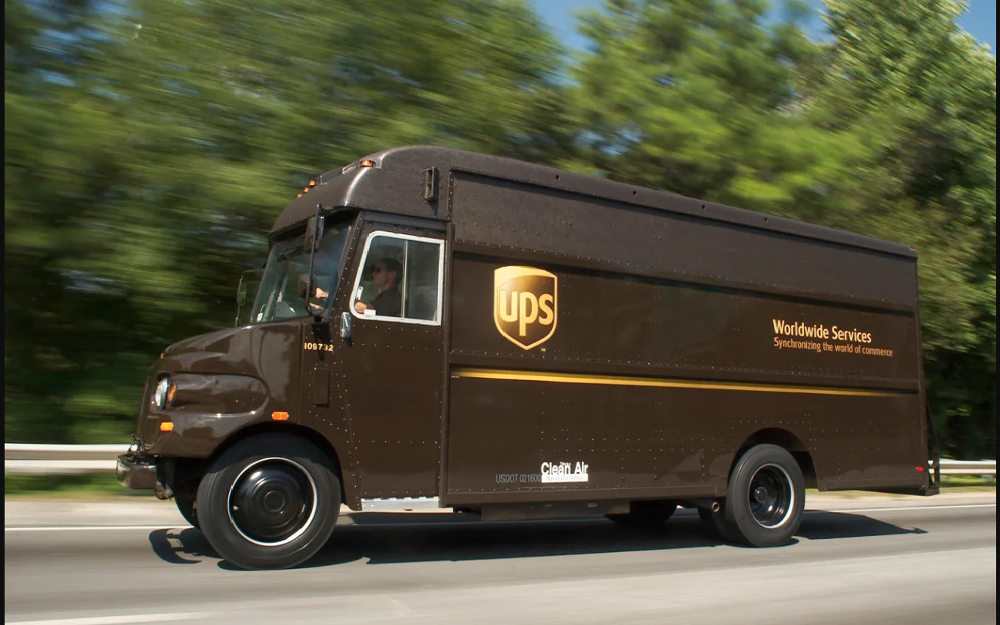

International Travellers
Ship eligible luggage ahead and travel with less baggage and stress.
Making International Shipping Simple
WHO WE ARE
BuyLocate Logistics is a Lagos-based courier and international logistics company helping individuals, travellers and businesses move luggage, packages and shipments from Nigeria to destinations around the world.
Established in 2019, we are focused on making international shipping simpler, more convenient and less stressful. From everyday packages and business shipments to excess travel luggage, BuyLocate combines personalised local support with access to a trusted international delivery network.

SHIPPING, SIMPLIFIED
WHO WE SERVE
Whether it is one suitcase, an important document, a personal package or a business shipment, our objective remains the same: make international shipping easier.
Ship eligible luggage ahead and travel with less baggage and stress.
Move luggage, books and approved personal belongings for study overseas.
Get practical shipping support when moving internationally.
Stay connected through reliable package delivery to loved ones.
Send approved products and business shipments to international customers.
Support cross-border fulfilment with clear shipping guidance.

GLOBAL REACH, LOCAL SUPPORT
With express delivery services reaching over 200 countries and territories, we support customers who are travelling, relocating, studying abroad, sending items to loved ones or growing a business internationally.